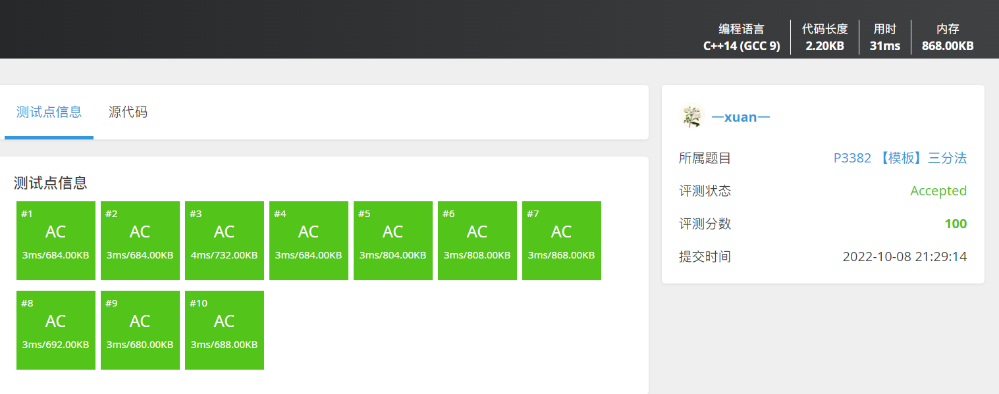

问题重述
结合折半查找思路，给出三分查找的实现方法，并性能分析。
🗨️连续区间
存储结构
如何优雅的储存一个多项式凸函数？
使用链表？
使用数组？🚩
无他，易于实现（摆烂）尔
vector<double> ploy;//储存多项式
核心函数
如何计算多项式？
一个减少了指数幂运算的小优化技巧：
double fun(double x) { double ans = 0; //一个有趣的求多项式的算法 for (int i = 0; i < this->myploy.size(); i++) { ans = ans * x + this->myploy[i]; } return ans; }
三分查找 double find(vector<double>& ploy,double left,double right)
{
//给出一个 N 次函数，保证在范围[l,r] 内存在一点 x，使得 [l,x] 上单调增，[x,r] 上单调减。试求出 x 的值。
this->myploy = ploy;
double midl, midr;
while (left < right)
{
if (fabs(right - left) < 0.000001)
break;
midl = left + (right - left) / 3.0;
midr = right - (right - left) / 3.0;
double ansl, ansr;
ansl = fun(midl);
ansr = fun(midr);
if (ansl >= ansr)
{
right = midr;
}
else
{
left = midl;
}
}
return left;
}
double find(vector<double>& ploy,double left,double right) { //给出一个 N 次函数，保证在范围[l,r] 内存在一点 x，使得 [l,x] 上单调增，[x,r] 上单调减。试求出 x 的值。 this->myploy = ploy; double midl, midr; while (left < right) { if (fabs(right - left) < 0.000001) break; midl = left + (right - left) / 3.0; midr = right - (right - left) / 3.0; double ansl, ansr; ansl = fun(midl); ansr = fun(midr); if (ansl >= ansr) { right = midr; } else { left = midl; } } return left; }
解题记录
🗨️数组
代码
int find_discrete(vector<int>& nums)//处理整体凸的数组 { int right, left; left = 0; right = nums.size() - 1; int midl, midr; while (left <= right) { midl = left + (right - left) / 3; midr = right - (right - left) / 3; if (nums[midl] >= nums[midr]) { right = midr - 1; } else left = midl + 1; } return nums[left]; }
性能分析
三分查找的时间复杂度：O(log3n)，二分查找的时间复杂度：O(log2n)
尽管二者的复杂度级别一样，但是二分查找的效率更高，因为二分查找是在1/2的区域寻找值，而三分查找是在2/3的区域寻找值
Reference
全文背诵⬇️
完整代码
// 三分查找.cpp : 此文件包含 "main" 函数。程序执行将在此处开始并结束。 // #include <iostream> #include<bits/stdc++.h> using namespace std; class trisection_search { private: vector<double> myploy;//储存多项式 double fun(double x) { double ans = 0; //一个有趣的求多项式的算法 for (int i = 0; i < this->myploy.size(); i++) { ans = ans * x + this->myploy[i]; } return ans; } public: double find(vector<double>& ploy,double left,double right) { //给出一个 N 次函数，保证在范围[l,r] 内存在一点 x，使得 [l,x] 上单调增，[x,r] 上单调减。试求出 x 的值。 this->myploy = ploy; double midl, midr; while (left < right) { if (fabs(right - left) < 0.000001) break; midl = left + (right - left) / 3.0; midr = right - (right - left) / 3.0; double ansl, ansr; ansl = fun(midl); ansr = fun(midr); if (ansl >= ansr) { right = midr; } else { left = midl; } } return left; } int find_discrete(vector<int>& nums)//处理整体凸的数组 { int right, left; left = 0; right = nums.size() - 1; int midl, midr; while (left <= right) { midl = left + (right - left) / 3; midr = right - (right - left) / 3; if (nums[midl] >= nums[midr]) { right = midr - 1; } else left = midl + 1; } return nums[left]; } }; int main() { trisection_search S; int N; double l, r; cin >> N >> l >> r; vector<double> in(N + 1); for (int i = 0; i <= N; i++) { cin >> in[i]; } printf("%.5lf", S.find(in, l, r)); return 0; } // 运行程序: Ctrl + F5 或调试 >“开始执行(不调试)”菜单 // 调试程序: F5 或调试 >“开始调试”菜单 // 入门使用技巧: // 1. 使用解决方案资源管理器窗口添加/管理文件 // 2. 使用团队资源管理器窗口连接到源代码管理 // 3. 使用输出窗口查看生成输出和其他消息 // 4. 使用错误列表窗口查看错误 // 5. 转到“项目”>“添加新项”以创建新的代码文件，或转到“项目”>“添加现有项”以将现有代码文件添加到项目 // 6. 将来，若要再次打开此项目，请转到“文件”>“打开”>“项目”并选择 .sln 文件